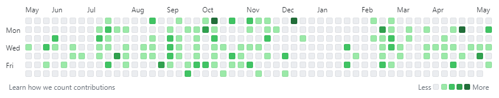

Ett versionshanteringssystem som används för att hantera kod.
Kod sparas i s.k. "git repos" och vid varje sparning av kod gör man en "git commit" som "pushas" till repot. På så sätt får man historik, kan se vem som gjort vad samt motverkar konflikter i kod om man är flera utvecklare i samma projekt.
På tjänster som Github kan man se en kalender med hur ens commits sett ut det senaste året

Github - En tjänst där kod kan lagras, ägs av Microsoft.
Gitlab - Även det en tjänst där kod lagras, men som byggs på öppen källkod och går därför att hosta själv.
En ingång för att kunna göra en koppling mellan system.
Inom webben är JSON-format vanligt i dessa APIer.
Swagger/OpenAPI - Standard för att beskriva ett API
Endpoint - En sökväg i ett API
Är ett akronym för Create, Read, Update, Delete och är de grundläggande funktionerna i databashanterare.
Det i sin tur gör det vanligt att de används i API:er för att beskriva de fyra olika typerna av anrop som går att göra.
De fyra typerna använder i regel HTTP-metoderna:
Mycket av internet drivs av tjänster som ligger hos Amazon. Det kan vara allt från olika typer av specialiserade servrar och databaser till olika tjänster.
Några av de vanligaste är bl.a. "S3" som är fillagring, "Cloudfront" - som är ett cachnings-system, "Cloudwatch" som är ett loggningssystem m.m.
IAM - Credentialssystem
Cloudfront - Cachningssystem
S3 - Fillagring
Lambda - Serverless compute service
Cloudwatch - Loggning
Lightsail - VPS-hantering
SES - Mailserver
Server som kör Javascript, vilket gör att man kan skriva javascript-kod både för backend och frontend.
Blivit populär då det är lätt att sätta upp och kan utökas med flera olika libs exempelvis express
NPM - Pakethanterare för NodeJs Express - WebApp-framework
Är en "server-computing"-tjänst från Amazon. Med detta menas att tjänsten körs enbart när ett anrop görs. Man har med andra ord inte en server som är igång och kostar en massa pengar dygnet runt, utan betalar bara för varje exekvering/anrop. Detta gör det väldigt lätt att skala upp en applikation eller skript.
Det lämpar sig bra till micro-services och funktioner som bara behöver köras och ge ett svar tillbaka.
Man kan exempelvis bygga en applikation som beskär och skalar om en bild och ger tillbaka den nya bilden
En cachning och säkerhetstjänst för webbservrar. Skapar ett lager så att trafiken mellan en besökare och server alltid går genom cloudflares servrar.
På så sätt kan de dels cachea innehåll, men även se till att säkerheten hålls högre och motverka DDOS-attacker.
Eftersom inte besökaren kan se den faktiska webbservern så ökar även det säkerheten.